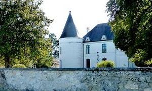
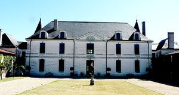
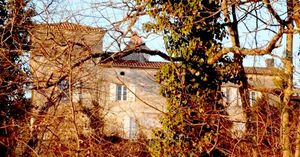
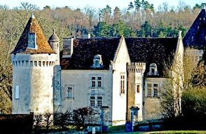
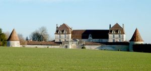
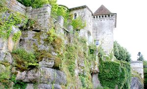
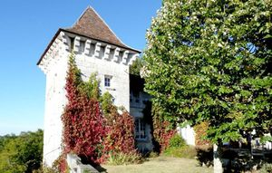
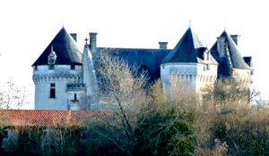

Recensement Jean-Claude Truffet
| Département | 24 — Dordogne |
| Canton | Mareuil |
| Commune | Mareuil |
| Type d'édifice | Forteresse |
| Période d'origine | XV-XVII |
| Coordonnées GPS | 45° 26' 9,5" Nord et 0° 25' 12,3" Est. Beauregard GPS : 45° 26' 02,1" Nord et 0° 26' 2,9" Est. Gauterie grav 6-7 GPS : 45° 27' 05" Nord, 0° 27' 11" Est. Mareuil GPS : 45° 27' 14,52" Nord, 0° 27' 10,86" Est. Chavreroche grav 3. Bélussière grav 4. Clozuroux grav 5. Puychenie grav 8 |








A MAREUIL plusieurs châteaux; Beaulieu, Beauregard, Gauterie, Monbreton. MAREUIL, (voir article suivant). BEAULIEU, au sud-ouest du bourg, propriété de la famille Pichon, . La famille Pichon possède le domaine de la Révolution à 1960, date à laquelle il est racheté par les actuels propriétaires.
BEAUREGARD, du XVe, XVIe et XVIIe siècles, inscrit au titre des M.H. en 1948. Le château surveillait lentrée en Périgord, laccès vers Angoulême et vers le Limousin. Cest pourquoi il a joué un grand rôle pendant une partie de la guerre de 100 ans. Le château actuel fut reconstruit vers la fin du XVe siècle, sur des fondations plus anciennes. La dernière prieure de l'abbaye de Fontaine y naquit. Elle fut tuée et brûlée à la Révolution, et repose dans l'église de Saint-Pardoux. Le corps de logis est flanqué de deux énormes tours à mâchicoulis et est défendu au nord par une troisième tour désaxée sur la gauche. Situé à l'est la chartreuse du XVIIIe siècle à un étage soudée à la forteresse en équerre. Des pilastres rejoignent le toit.
GAUTERIE, La commune de Mareuil tient une place importante dans lhistoire du Périgord, il sagit de lune des quatre baronnies de la contrée parmi Bourdeilles, Biron et Beynac. Dautre part, au XIIIe siècle, le village est un prieuré rattaché à Brantôme. Dailleurs, les barons de Mareuil affichent également leur attachement à la religion. En effet, leur devise est Ré qué Diou, ce qui signifie Rien que Dieu. Le château de la Gauterie, ancienne demeure de la famille des de Raimond, a connu de nombreuses restaurations entreprises par les propriétaires actuels.
MONBRETON, La vieille demeure appartenait à des familles les Falampin et les Petits.
BEAULIEU, offre un logis classique encadré par deux tours circulaires côté parc et deux pavillons carrés côté cour. Le haut des fenêtres est orné de têtes sculptées et lintérieur conserve un bel escalier à balustres de pierre. Des communs forment des ailes en retour déquerre, reliées par une grille rythmée de pilastres
GAUTERIE, leur châtellenie comprend onze paroisses, est une construction qui mêle des éléments des XVIe et XIXe siècles, mais qui sinscrit dans les traces dun édifice plus ancien, situé au sommet dune falaise, on peut voir une partie de la tour descalier datant du XVIe siècle et le pigeonnier qui est une ancienne tour de défense. Au sud du bourg, avec des éléments du XVIe siècle mais qui s'inscrit dans les traces d'un édifice bien plus ancien Lensemble a été largement remanié, notamment la tour carrée.
MONTBRETON se compose dun corps de logis rectangulaire à cinq travées. Le bâtiment comporte deux étages et un supplémentaire, placé sous les combles, est construit en pierre de taille. Au-dessus dune corniche ouvragée se dresse le toit du logis qui se termine à ses extrémités, par deux petits toits pointus. Dans chacun de ces toits souvrent une fenêtre donnant sur les combles. Située au centre une troisième fenêtre est placée en chien assis, deux cheminées en pierre complètent la toiture couverte dardoises.
Famille des de Raimond
"
Beaulieu grav 1-2 GPS : 45° 26' 9,5" Nord et 0° 25' 12,3" Est. Beauregard GPS : 45° 26' 02,1" Nord et 0° 26' 2,9" Est. Gauterie grav 6-7 GPS : 45° 27' 05" Nord, 0° 27' 11" Est. Mareuil GPS : 45° 27' 14,52" Nord, 0° 27' 10,86" Est. Chavreroche grav 3. Bélussière grav 4. Clozuroux grav 5. Puychenie grav 8